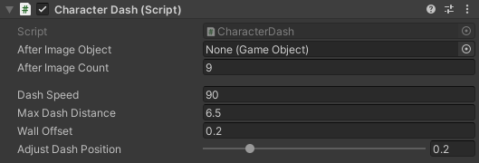

CharacterDash
SWITCH TO SCRIPTINGOverview
The CharacterDash script enhances character movement by enabling a dash mechanic. Upon attaching this class to your characters,
they gain the ability to swiftly dash in a designated direction, with customizable parameters enabling precise control over the dash
behaviour.
To utilize the component in your Unity project, attach the script to the root object of your character within the Unity
Editor. Configuration involves adjusting parameters exposed in the Inspector window to tailor the dash behaviour.
Note that the CharacterDash requires the following components to operate correctly:
When attaching the script to your character object, the referenced scripts will automatically be included.
Inspector
| AfterImageObject | The GameObject to be spawned as the afterimage for the dash. (Optional) |
| AfterImageCount | The number of afterimages to be spawned. |
| DashSpeed | The speed at which the character travels during the dash. (m/s) |
| MaxDashDistance | The maximum distance the character will cover in meters. |
| WallOffset |
The distance from a wall at which the character stops dashing.
This means that if your character would hit a wall before covering the entire dash distance, they will stop in front of that wall at the specified range. |
| AdjustDashPosition | Adjusts the character's position to the platform's height plus the specified offset if their feet or head would collide with a wall during the dash, ensuring a smooth start to the dash. |